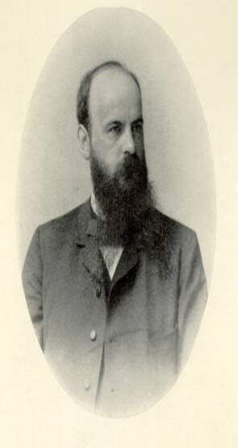

|  |
Bruno Fleischer attended the universities of Tübingen, Geneva,
and Berlin, obtaining his doctorate in Tübingen in 1898. He was assistant
at the eye clinic in that town and in 1904 was habilitated for ophthalmology,
becoming extraordinary professor in 1909. In 1920 he was called to The
Universität Erlangen-Nürnberg as ordinarius, holding this tenure
until 1951.